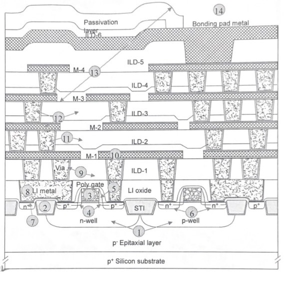

① Twin-well [Implant]
② STI(Shallow Trench Isolation) [Photolithography, Etch, Deposition]
③ Gate Structure
[Oxidation, Dry Diffusion]
④ Lightly Doped Drain [Implants]
⑤ Sidewall Spacer
⑥ S/D [Implants]
⑦ Contact Formation [Etch]
⑧ LI(Local Interconnect)
⑨ ILD(Interlayer Dielectric) to Via-1
⑩ First Metal Layer
⑪ Second ILD to Via-2
⑫ Second Metal Layer to Via-3
⑬ Metal-3 to Pad Etch
⑭ Parametric Testing